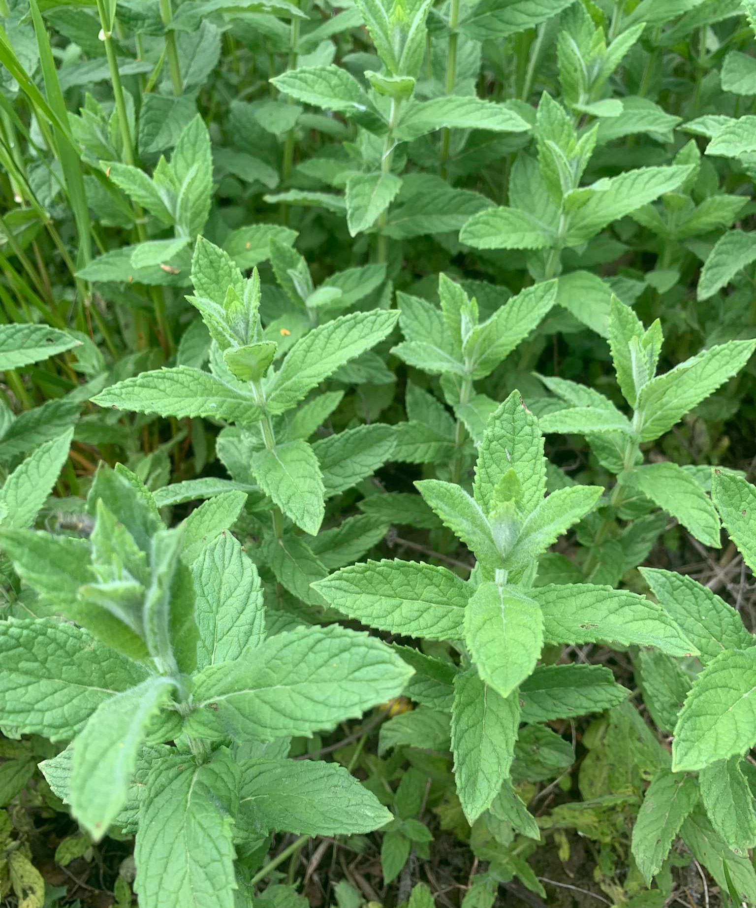

Consiglio
Ha proprietà digestive e, per il contenuto in diosfenolo, stimola la diuresi.
Soprattutto nella cucina asiatica, come condimento nelle pietanze con chutney (salsa a base di frutta e spezie). Le foglie e i fiori possono essere impiegati per aromatizzare insalate crude, salse, bevande e vengono anche candite.
Fonte dell'essenza usata in sostituzione di quella di menta piperita in pasticceria.
Nelle campagne anticamente si usava spargerne le foglie per casa, oltre ad un piacevole effetto deodorante, si scacciavano in questo modo gli insetti.
Claudio